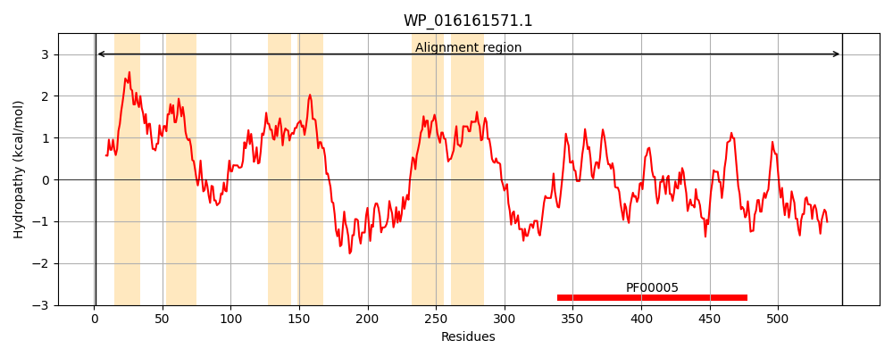
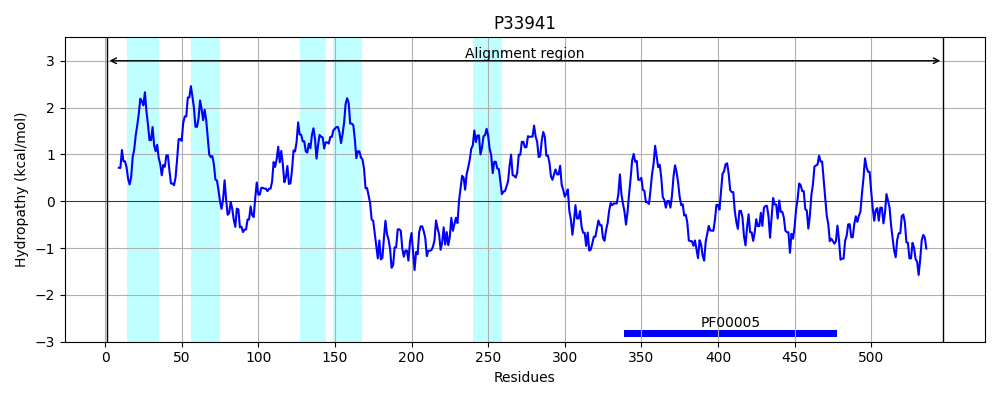
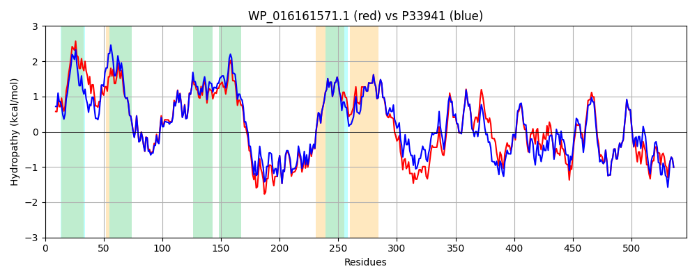

Hit Accession: P33941
Hit TCID: 3.A.1.113.3
Hit Description: gnl|BL_ORD_ID|9946 gnl|TC-DB|P33941|3.A.1.113.3 ABC transporter ATP-binding protein yojI - Escherichia coli.
Mach Len: 547
e:0.000000
Query TMS Count : 6
Hit TMS Count: 5
TMS-Overlap Score: 4.750000
Predicted Substrates:CHEBI:64627;microcin
BLAST Alignment:
Score: 2399 , Bit scores: 928 bits, E-value: 0.0e+00, Alignment length: 547, Percentage identity: 84
Query: 1 MELLSLVWRQYRWPFLGVIALSLLSAALGIGLIAFINLRLITAVDTSLRVLPEFLGLLGLLMAVTLGSQLALTTLGHHFVYRLRGEFVKRILDTQIEQVEKIGSASLLAGLTSDIRNITIAFVRLPELVQGIILTFGSAAYLAWLSGKMMLVTALWMALTIWGGFVLVSRVYKHMASLRETEDKLYHDYQTVLEGRKELTLNRERAEYVFNQLYLPDAREYRHHIVRADTFHLSAVNWSNIMMLGAIGLVFWMANSLGWADTAVAATYSLTLLFLRTPLLSAVGALPTLLSAQVAFNKLRQFSLAPYQAEFPRPQAHPDWQTLELRDVTFHYPDQRFAVGPLNLTLKRGELVFLIGGNGSGKSTLAMLLTGLYQPVSGQILVDGQPLAADKPEEYRKLFSAVFTDVWLFDRLLGPQGEEADPALVATWLERLQMAHKLQLENGKIADLRLSKGQKKRVALLLALAESRDIILLDEWAADQDPHFRREFYQVLLPLMQQMGKTVFAISHDDHYFQHADRLLEMRAGQLSELTGEERAQASRDAVARTA 547
MELL LVWRQYRWPF+ V+ALSL SAALGIGLIAFIN RLI DTSL VLPEFLGLL LLMAVTLGSQLALTTLGHHFVYRLR EF+KRILDT +E++E++GSASLLAGLTSD+RNITIAFVRLPELVQGIILT GSAAYL LSGKM+LVTA+WMA+TIWGGFVLV+RVYKHMA+LRETEDKLY D+QTVLEGRKELTLNRERAEYVFN LY+PDA+EYRHHI+RADTFHLSAVNWSNIMMLGAIGLVFWMANSLGWADT VAATYSLTLLFLRTPLLSAVGALPTLL+AQVAFNKL +F+LAP++AEFPRPQA P+WQTLELR+VTF Y D F+VGP+NLT+KRGEL+FLIGGNGSGKSTLAMLLTGLYQP SG+IL+DG+P++ ++PE+YRKLFSAVFTDVWLFD+LLGP+G+ A+P LV WL +L+MAHKL+L NG+I +L+LSKGQKKRVALLLALAE RDIILLDEWAADQDPHFRREFYQVLLPLMQ+MGKT+FAISHDDHYF HADRLLEMR GQLSELTGEER ASRDAVARTA
Sbjct: 1 MELLVLVWRQYRWPFISVMALSLASAALGIGLIAFINQRLIETADTSLLVLPEFLGLLLLLMAVTLGSQLALTTLGHHFVYRLRSEFIKRILDTHVERIEQLGSASLLAGLTSDVRNITIAFVRLPELVQGIILTIGSAAYLWMLSGKMLLVTAIWMAITIWGGFVLVARVYKHMATLRETEDKLYTDFQTVLEGRKELTLNRERAEYVFNNLYIPDAQEYRHHIIRADTFHLSAVNWSNIMMLGAIGLVFWMANSLGWADTNVAATYSLTLLFLRTPLLSAVGALPTLLTAQVAFNKLNKFALAPFKAEFPRPQAFPNWQTLELRNVTFAYQDNAFSVGPINLTIKRGELLFLIGGNGSGKSTLAMLLTGLYQPQSGEILLDGKPVSGEQPEDYRKLFSAVFTDVWLFDQLLGPEGKPANPQLVEKWLAQLKMAHKLELSNGRIVNLKLSKGQKKRVALLLALAEERDIILLDEWAADQDPHFRREFYQVLLPLMQEMGKTIFAISHDDHYFIHADRLLEMRNGQLSELTGEERDAASRDAVARTA 547 | Protein Hydropathy Plots: |
|---|
|  |  |
Pairwise Alignment-Hydropathy Plot:
|
|---|
|  |